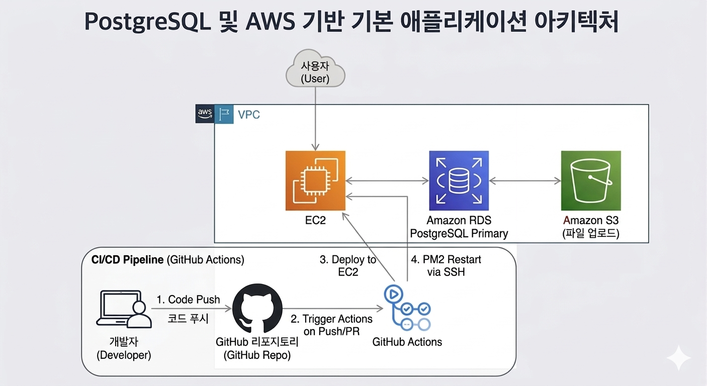
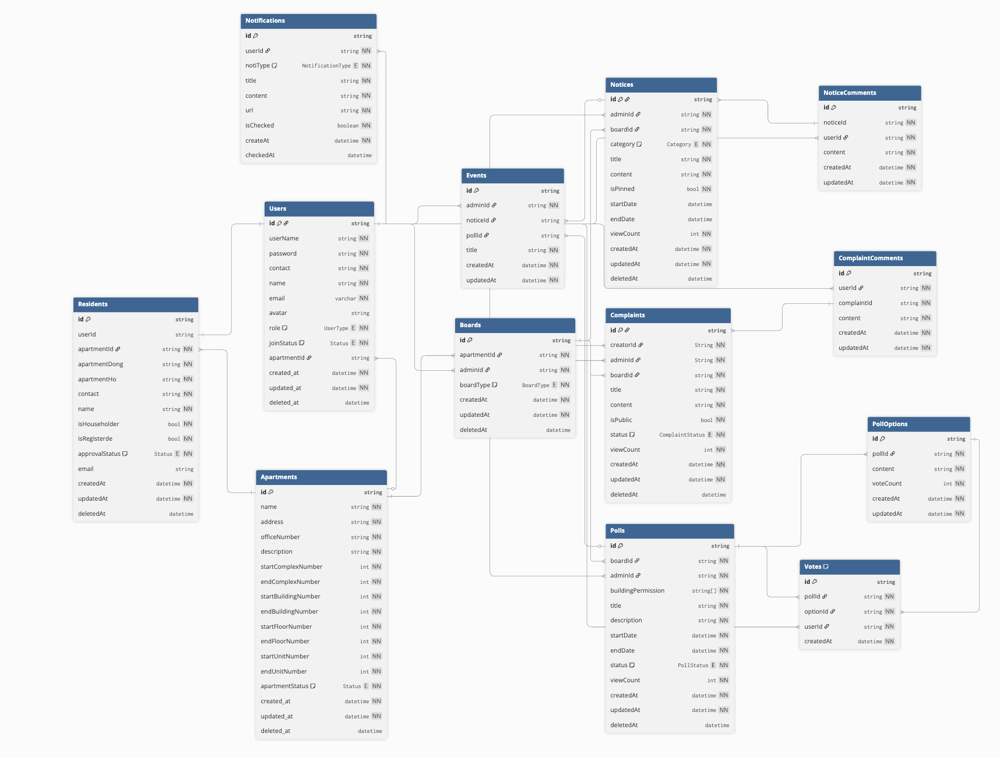

part4 team4
김지선 · 나영준 · 이상운
본 프로젝트는 주민들과 아파트 관리 단체를 위한 상호 관리 플랫폼으로 슈퍼어드민, 어드민, 유저의 3가지 유형으로 구분되어 사용할 수 있습니다.
| 항목 | 기간 | 주요 내용 |
|---|---|---|
| 기획 및 요구사항 정리 | 02/13 ~ 02/20 | 프로젝트 방향성 논의, 핵심 기능 정의 및 기능 리스트, ERD 작성 |
| 1차 개발 스프린트 | 02/23 ~ 03/05 | 인증, 프로젝트, 멤버, 할 일, 하위 할 일 등 주요 기능 구현 |
| 중간 발표 | 03/06 | ERD 설계, R&R 분해 현황 및 개발 진행 상황 공유 |
| 중간 점검 & 회고 | 03/06 | 기능 시연, 피드백 수렴 및 2차 개발 분배 |
| 2차 개발 스프린트 | 03/07 ~ 03/27 | 추가 기능 개발, 테스트 및 버그 수정 |
| 배포 및 각종 문서 준비 | 03/30 ~ 03/31 | aws 배포 및 발표 자료 준비 |
| 최종 발표 & 회고 | 01/14 | 최종 결과물 시연 및 프로젝트 회고 |
.
├── prisma/
│ ├── migrations/ # 데이터베이스 마이그레이션
│ ├── schema.prisma # 데이터 모델 정의
│ └── seed.mjs # 초기 데이터 시드 (@faker-js/faker)
├── src/
│ ├── main.ts # 서버 실행 진입점 (Socket.io, cron 초기화)
│ ├── app.ts # Express 앱 설정 (미들웨어, 라우터 등록)
│ ├── modules/ # 기능별 독립 모듈
│ │ ├── apartment/ # 아파트 정보 관리
│ │ ├── auth/ # 인증 + 회원가입 + 관리자/입주민 관리
│ │ ├── comment/ # 댓글 관리
│ │ ├── complaint/ # 민원 관리
│ │ ├── event/ # 이벤트 관리
│ │ ├── notice/ # 공지사항 관리
│ │ ├── notification/ # 알림 (Socket.io + SSE)
│ │ ├── poll/ # 투표 게시판
│ │ ├── residentList/ # 입주민 명부 (CSV 업로드/다운로드)
│ │ ├── user/ # 사용자 프로필 관리
│ │ └── vote/ # 투표 참여
│ ├── lib/
│ │ ├── prisma.ts # Prisma Client 싱글톤
│ │ ├── constants.ts # 환경변수 및 전역 상수
│ │ ├── socket.ts # Socket.io 싱글톤 (initSocket, getIO)
│ │ └── errors/ # 커스텀 HTTP 에러 클래스
│ ├── middlewares/
│ │ ├── asyncHandler.ts # 비동기 에러 래퍼
│ │ ├── authMiddleware.ts # JWT 인증 미들웨어
│ │ ├── errorHandler.ts # 중앙 에러 핸들러 & 404 처리
│ │ └── upload.ts # Multer 파일 업로드 설정
│ ├── structs/
│ │ └── common.validation.ts # Superstruct 공통 검증기
│ └── types/
│ └── express.d.ts # Express Request 타입 확장 (req.user)
├── jest.config.ts
├── tsconfig.json
├── .prettierrc
└── package.json
Controller → Service → Repository
요청 / 비즈니스 로직 / DB 접근 계층 분리
- Controller
· HTTP 요청/응답 처리
· 입력값 검증 및 예외 처리
- Service
· 비즈니스 로직 담당
· 트랜잭션 관리
- Repository
· DB 접근 전담
· Prisma 기반 데이터 처리

